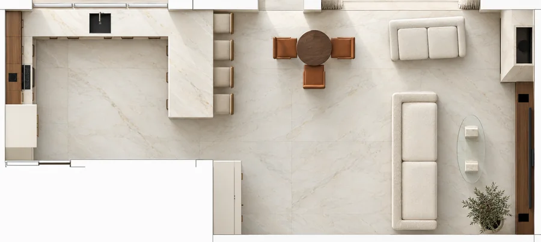
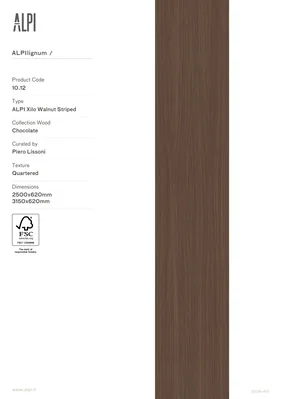
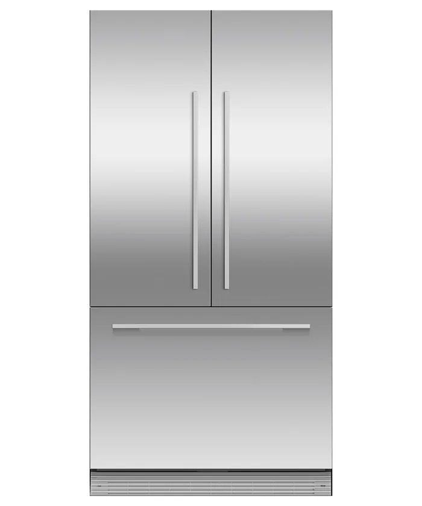
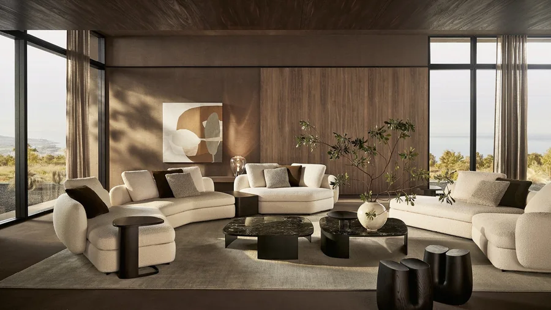
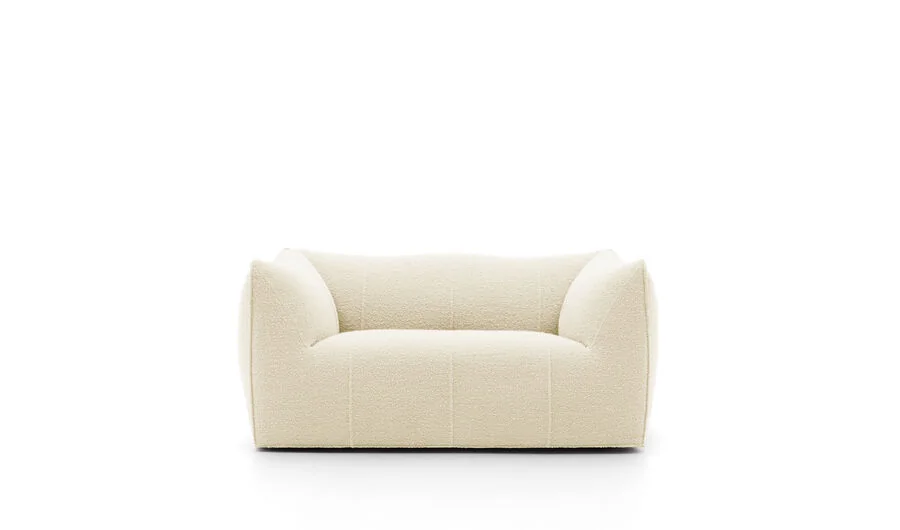
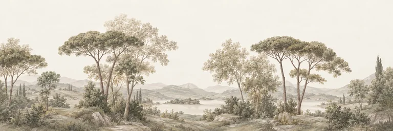
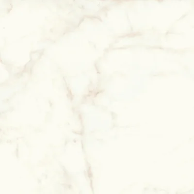
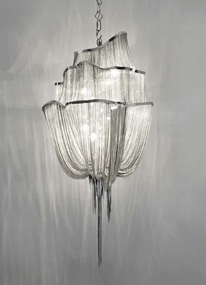
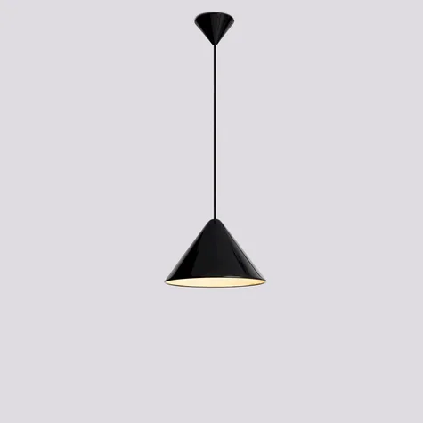
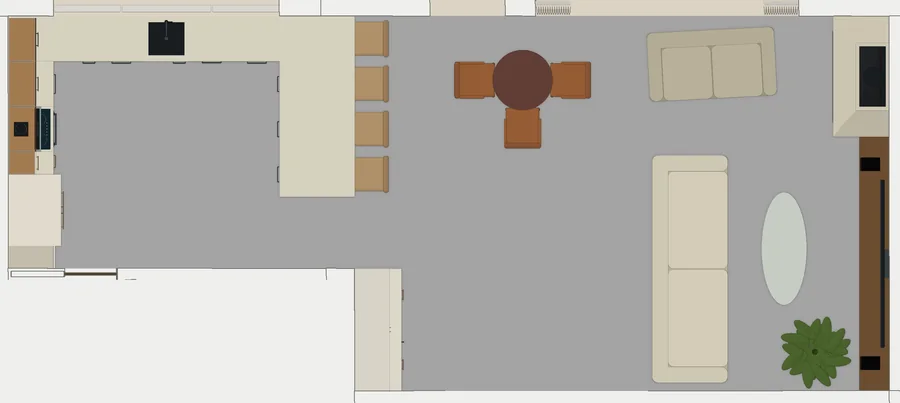

1.08
Кухня-гостиная
Новый образ помещения — один из вариантов для обсуждения. Планировка, проёмы и остекление — по проекту; мягкая группа на шесть мест расставлена по размерной схеме, проходы проверены. Изображения — эскизная визуализация: рисунок камня, фактуры тканей и мелкие детали условны.
{kind=link}
{kind=link}
{kind=link}
{kind=link}
{kind=link}
{kind=link}
{kind=link}
{kind=link}
{kind=link}
{kind=link}
{kind=link}

Замысел
Единое пространство кухни, столовой и гостиной под высоким потолком с открытой балкой. Молочные фасады кухни и мягкой мебели, тёплый орех верхних шкафов и бара, светлый камень пола, столешниц и камина, бронзовые детали. Стены гостиной объединяет непрерывная светлая лесная роспись; камин — самостоятельный каменный объём с телевизором рядом; над гостиной — три каскадных светильника. Мягкая группа на шесть мест: большой диван перед телевизором и второй диван у окна. Высокое окно получает раскрытые светлые портьеры и тюль, кухонное окно — три поднятые рулонные шторы. Вечером включаются каскады, подвесы над полуостровом, витрина бара и скрытая подсветка кухни.
Что здесь нарисовано
Рядом с каждым предметом — что это в жизни: изделие производителя, вещь на заказ или позиция, которая ещё подбирается. Новые позиции этой версии предложены для обсуждения и не утверждены к заказу.
Кухня
На заказ — фасады по образцу, техника подбирается
- Нижние фасады Заказная молочная сатиновая отделка; лак подбирается по физическому образцу, код не назначен
-
Верх кухни и ореховые плоскости

Шпон ALPI Xilo Walnut Striped 10.12, матовая защитная отделкаИзделие производителяСтраница производителя - Столешницы Atlas Plan Calacatta Delicato Silk, плита 12 ммИзделие производителяСтраница производителя
-
Холодильник

Fisher & Paykel RS90A3, встроенный French Door — две верхние створки и нижний ящик; заказные молочные панели и бронзовые ручкиИзделие производителя896 × 610 × 1798 ммСтраница производителя - Прочая техника Варочная панель, духовой шкаф, мойка и смесительПодбирается
- Полуостров Со стороны гостиной — четыре барных места; стулья не выбраныПодбирается
- Подсветка кухни Лента 24 В, 3000 K в алюминиевом профиле, семь участков около 8,1 м; артикул не выбранПодбирается
Бар
На заказ — решение принято ранее и сохраняется
- Бар Ореховая отделка, высокая витрина с подсветкой, открытая вентиляция винного шкафа
- Винный шкаф Meyvel MV28-KBT2Изделие производителяСтраница производителя
Столовая
Подбирается — образ и размеры зафиксированы, изделия выбираются
- Круглый стол Три стула; стол и стулья сдвинуты от двери на террасу, чтобы освободить проходØ 800 мм
Гостиная
мягкая группа на шесть мест
Две диванные серии с фабричными молочными тканями — разными, их оттенки сопоставляются на образцах. Основной диван рассчитан на четыре места по 650 мм; второй — заводской двухместный.
-
Основной диван

Poliform Saint-Germain, два торцевых модуля, ткань Siro 01 Bianco; четыре местаИзделие производителя3020 × 1000 мм, сиденье 370 ммСтраница производителя -
Второй диван

B&B Italia Le Bambole — Bibambola, ткань Sila White; два местаИзделие производителя1690 × 910 × 750 ммСтраница производителя - Журнальный стол Прозрачное стекло на двух светлых каменных опорах из травертина; заказная конструкцияНа заказ1500 × 600 × 380 мм
- Камин Цельная светлая керамогранитная облицовка существующего объёма — Calacatta Delicato; топка и решётки сохраняютсяНа заказ
- Телевизор и тумба По проекту диагональ 98 дюймов; модели не выбраныПодбирается
Стены, роспись и пол
образцы и пробные выкрасы — до заказа
-
Роспись

Заказная лесная панорама — единая композиция на стенах гостиной; концепт авторской росписи или печати, изготовитель не выбранНа заказ - Стены Little Greene Slaked Lime 105, Intelligent Matt — тёплый молочный фонИзделие производителяСтраница производителя
-
Пол

Atlas Concorde Marvel Shine Calacatta Delicato, Matte Sensitech; сплошное покрытие — предложение, границы покрытий по проекту уточняютсяИзделие производителя1200 × 1200 × 9 ммСтраница производителя
Свет
Подбирается — изделия предложены, комплекты и крепления уточняются
-
Три каскадных подвеса

Terzani Atlantis 0A13S, финиш brushed bronze; на фото — никель, бронзовый вариант есть в серииИзделие производителятело 500 × 550 × 760 ммСтраница производителя -
Подвесы над полуостровом

HAY Compass Pendant 260, Soft Black, 4 шт.Изделие производителяСтраница производителя - Встроенные светильники По проекту, тёплый свет; модель уточняется
Окна
предложение; образцы тканей и обмер — до заказа
Спокойные однотонные ткани без блестящего декора — вертикали, которые поддерживают высоту проёма и светлые диваны, не споря с росписью и каскадами.
- Портьеры высокого окна Création Baumann UNIVERSAL V 0100390, матовая плотная ткань, светлый тёплый greigeИзделие производителяСтраница производителя
- Тюль Création Baumann WISH 0102325, полупрозрачный креп, молочныйИзделие производителяСтраница производителя
- Карнизы Silent Gliss 5600, два независимых ряда в проёме; портьера в складке Wave 60Изделие производителяСтраница производителя
- Кухонное окно Luxaflex, ткань Sirius Screen 10% 6556 — три рулонных полотна по секциям окна, показаны поднятымиИзделие производителяСтраница производителя
Посуда, растения, книги и предметы на полках — антураж кадра. Сад и лес за окнами — образ участка по проекту, не фотография. Шторы показаны раскрытыми; закрытое состояние в эту версию не входит.
Подробнее
Мягкая группа и телевизор
Шесть мест: четыре на основном диване перед телевизором и два на втором диване у окна. От передней кромки основного дивана до экрана около 2 м, от глаз сидящих до центра экрана — 2,4–2,7 м. Со второго дивана телевизор виден под заметным углом, сбоку. Между диваном и журнальным столом 450 мм, между столом и тумбой телевизора 700 мм — это доступ к посадке, а не сквозной проход.
Проходы
Проём в холл полностью свободен от мебели. Между двумя диванами — компактный обход около 0,7 м. Круглый стол со стульями отодвинут от остекления на 0,4 м, чтобы освободить подход к двери на террасу. Пути от входа к телевизору, бару и террасной двери проверены по плану при показанной расстановке.
Высокое окно
Два независимых ряда на карнизах внутри откоса: спереди светлые матовые портьеры мягкой волной, сзади молочный полупрозрачный тюль. В раскрытом состоянии ткань собрана у краёв примерно по 450 мм с каждой стороны, середина остекления — около 2,6 м из 3,5 — остаётся открытой; окно при этом не увеличивается. Полотна до пола, без шлейфа.
Кухонное окно
Три отдельные рулонные screen-шторы по секциям окна. Ровная светлая ткань спокойнее рядом с росписью и ореховыми шкафами и собирает меньше кухонных загрязнений, чем римская штора; полотна подняты, у мойки и смесителя нет свободной ткани. Обе оконные ткани прозрачные: вечером при включённом свете они не заменяют ночную приватность, полное затемнение не предусмотрено.
За окнами
Терраса — существующая, по проекту. За ней показаны предлагаемый декоративный сад, газон и лесное окружение участка; вид направлен примерно на северо-запад. Это образ, а не фотография: точная панорама, посадки и благоустройство не выбраны, бассейн и другие объекты плана участка в фон не добавлены.
Что уточняется до заказа
- Посадка: полезная ширина мест, низкие спинки и угол обзора со второго дивана — пробная посадка на образцах
- Камин: расстояние от мягкой мебели и штор до топки проверяется по требованиям её изготовителя
- Роспись: обмер стен и единый макет на все поверхности, без белых полос у камина и торца бара; пробный фрагмент
- Образцы: молочный лак фасадов, ткани обоих диванов, шпон, камень и металл — при дневном и вечернем свете
- Холодильник: ниша и открывание дверей проверяются обмером после отделки — боковой запас на пределе
- Свет и стекло: крепления трёх каскадных светильников (54 кг), подсветка кухни, безопасное стекло и опоры столика — расчёт изготовителей
Из референсов
Какие приёмы из подборки легли в основу помещения — взят приём, а не чужая комната.
-
 REF-017
Коллаж дерева, камня, зелени и золотистых деталей
Палитра: молочный, орех, светлый камень и тёплый металл.
REF-017
Коллаж дерева, камня, зелени и золотистых деталей
Палитра: молочный, орех, светлый камень и тёплый металл.
-
 REF-019
Гостиная с пейзажным панно и фактурным столом
Деревья и простор: цельные стволы и кроны, дальний план, светлая середина. Мебель и потолок с фотографии не переносятся.
REF-019
Гостиная с пейзажным панно и фактурным столом
Деревья и простор: цельные стволы и кроны, дальний план, светлая середина. Мебель и потолок с фотографии не переносятся.
-
 REF-022
Камин с контрастной облицовкой и тёмными рейками
Самостоятельный камин с керамогранитной облицовкой. Чёрный рисунок и тёмные рейки исключены.
REF-022
Камин с контрастной облицовкой и тёмными рейками
Самостоятельный камин с керамогранитной облицовкой. Чёрный рисунок и тёмные рейки исключены.
-
 REF-039
Кухня-гостиная со светлым модульным диваном
Большая модульная мягкая зона. Фабрика с фотографии не установлена; в помещении — две проверенные серии диванов.
REF-039
Кухня-гостиная со светлым модульным диваном
Большая модульная мягкая зона. Фабрика с фотографии не установлена; в помещении — две проверенные серии диванов.
-
 REF-049
Гостиная с панно и тёмным деревянным столом
Стекло и камень в простом по конструкции журнальном столе.
REF-049
Гостиная с панно и тёмным деревянным столом
Стекло и камень в простом по конструкции журнальном столе.
-
 REF-036
Группа каскадных подвесных светильников
Группа из трёх каскадных подвесов.
REF-036
Группа каскадных подвесных светильников
Группа из трёх каскадных подвесов.
По проекту

- 50,73 м², Г-образный контур; кухня у западной стены, гостиная у остекления и камина
- Потолок из двух скатов, высота от 3,95 до 5,43 м; открытая стальная балка
- Панорамное остекление в сторону террасы и сада; высокое окно гостиной около 3500 × 4850 мм, кухонное окно 3000 × 1750 мм в три секции
- Проём в холл 1.04 — 2700 × 2600 мм, прямоугольный, без створок
- Камин с коробом до потолка и собственным дымоходом; телевизор 98 дюймов
- Освещение по проекту: 27 встроенных светильников, 4 подвеса над полуостровом и 3 подвеса в гостиной
